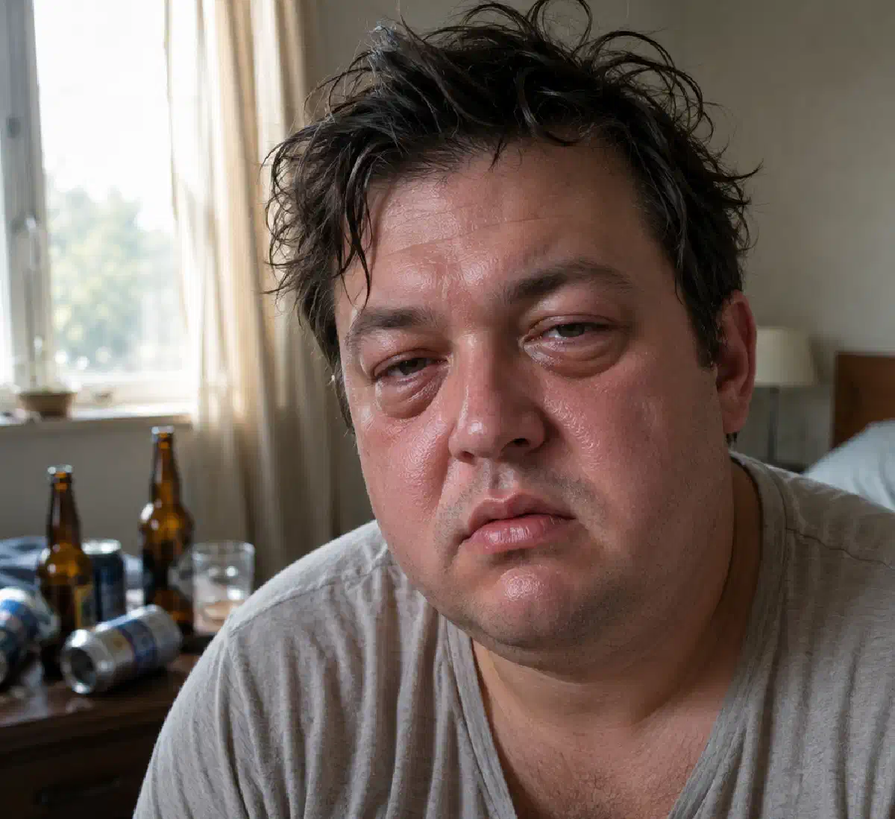

+38(068)
79 72 782
+38(068)
79 72 782Отеки после пива
Почему появляются отеки от пива и чем это опасно


Бесплатная консультация, работаем круглосуточно 24/7
Почему появляются отеки от пива и чем это опасно

Дата написания: 29 июн. 2026 г.
Последнее обновление: 29 июн. 2026 г.
Отеки от пива — частая проблема после употребления алкоголя, особенно если человек пил много, ел соленые закуски, мало спал или уже имеет проблемы с почками, сердцем, сосудами и давлением. На утро после пива может отекать лицо, появляться мешки под глазами, тяжесть в ногах, припухлость пальцев, слабость, головная боль и ощущение общего «разбитого» состояния.
Многие считают пиво легким напитком, но это ошибка. Даже при невысокой крепости пиво содержит алкоголь, влияет на водно-солевой баланс, сосуды, давление, работу почек и сердечно-сосудистую систему. Если отеки после пива появляются регулярно, становятся выраженными или сопровождаются одышкой, болью в груди, скачками давления и сильной слабостью, это может быть признаком серьезной нагрузки на организм.
Отеки после пива появляются из-за задержки жидкости в тканях. Алкоголь нарушает нормальную регуляцию воды и солей в организме, влияет на сосуды, почки и гормональные механизмы, которые отвечают за выведение лишней жидкости. Сначала пиво может усиливать мочеиспускание, но затем организм пытается компенсировать потерю жидкости и начинает удерживать воду.
Дополнительную роль играют соленые закуски: рыба, чипсы, сухарики, орешки, колбаски, копчености. Соль задерживает воду, усиливает жажду и повышает нагрузку на почки. В результате утром после пива человек может проснуться с отекшим лицом, мешками под глазами, тяжестью в теле и повышенным давлением. Отеки чаще возникают у людей, которые употребляют пиво вечером или ночью, пьют большими объемами, мало двигаются, плохо спят, имеют лишний вес, склонность к повышенному давлению или хронические заболевания.
Пиво задерживает жидкость в организме через несколько механизмов. Во-первых, алкоголь нарушает работу гормонов, которые регулируют выведение воды. Во-вторых, пиво часто употребляют в больших объемах, из-за чего организм получает много жидкости за короткое время. В-третьих, соленая пища усиливает задержку натрия, а вместе с ним задерживается и вода.
После употребления пива организм испытывает нагрузку: почки должны вывести продукты распада алкоголя, лишнюю жидкость и соли. Если почки не справляются быстро, вода начинает накапливаться в тканях. Поэтому утром появляются отеки лица, век, ног, рук и ощущение тяжести. Особенно заметной отечность становится после длительного употребления пива, пивного запоя или регулярного вечернего употребления. В таких случаях водно-солевой баланс нарушается сильнее, а организм не успевает полноценно восстановиться.
Отеки лица после пива на утро появляются из-за задержки жидкости, нарушения сна, нагрузки на почки и сосуды. Чаще всего отекают щеки, веки, область под глазами, губы и нижняя часть лица. Лицо может выглядеть припухшим, тяжелым, уставшим, иногда появляется покраснение кожи или сухость во рту.
Такая отечность особенно часто возникает, если человек пил пиво вечером, ел соленое, поздно лег спать и пил недостаточно обычной воды. Во время сна кровообращение замедляется, жидкость перераспределяется, и утром отеки становятся более заметными. Если отеки лица проходят в течение дня и появляются только после алкоголя, это чаще связано с перегрузкой организма. Но если лицо отекает регулярно, даже без алкоголя, или отечность сопровождается высоким давлением, одышкой, слабостью и нарушением мочеиспускания, нужно обратиться к врачу наркологу.
Ноги после пива могут опухать из-за задержки жидкости, нарушения кровообращения, нагрузки на сосуды и сердце. Особенно часто отеки ног появляются у людей, которые долго сидят или стоят, имеют варикоз, лишний вес, повышенное давление или сердечно-сосудистые проблемы.
После употребления пива жидкость может задерживаться в нижних конечностях, потому что ногам сложнее «возвращать» кровь и лимфу вверх. В результате появляется тяжесть, следы от носков, припухлость стоп, лодыжек и голеней. Иногда человек замечает, что обувь становится тесной, а ноги к вечеру выглядят более отекшими. Если ноги опухают после каждого употребления пива, это нельзя игнорировать. Регулярные отеки могут говорить не только о реакции на алкоголь, но и о проблемах с сердцем, венами, почками или обменом веществ.
Отеки под глазами после алкоголя появляются потому, что кожа в этой зоне тонкая, а жидкость быстро накапливается в рыхлой подкожной клетчатке. После пива мешки под глазами могут быть особенно заметны утром: веки выглядят тяжелыми, лицо уставшим, а кожа — тусклой.
Причинами становятся обезвоживание, задержка соли, плохой сон, нарушение микроциркуляции и нагрузка на почки. Чем больше алкоголя и соленых закусок было вечером, тем сильнее может быть отечность на утро. Если отеки под глазами появляются только после пива и проходят в течение дня, это сигнал, что организм плохо переносит такую нагрузку. Если же мешки под глазами сохраняются постоянно, стоит проверить состояние почек, сердца, щитовидной железы и артериальное давление. Если отеки, плохое самочувствие, бессонница, тревога и тяга к алкоголю повторяются регулярно, человеку может понадобиться не только восстановление после употребления, но и полноценное лечение алкоголизма с консультацией нарколога и дальнейшей поддержкой.
Соленые закуски значительно усиливают отеки после пива. Рыба, чипсы, сухарики, орешки, копчености и другие соленые продукты содержат много натрия. Натрий удерживает воду в организме, вызывает жажду и заставляет человека пить еще больше.
Пиво само по себе создает нагрузку на почки и водно-солевой баланс, а соль делает эту нагрузку сильнее. В результате организм получает алкоголь, большой объем жидкости и избыток соли одновременно. Это одна из главных причин, почему после пива утром отекает лицо, появляются мешки под глазами и тяжесть в ногах. Чем чаще повторяется такая ситуация, тем выше риск хронической задержки жидкости, скачков давления и ухудшения самочувствия. Особенно опасно сочетать пиво с очень солеными закусками людям с гипертонией, заболеваниями сердца, почек и сосудов.
Почки отвечают за выведение лишней жидкости, солей и продуктов обмена. После употребления пива на них ложится дополнительная нагрузка: нужно переработать алкоголь, вывести лишнюю воду, восстановить баланс натрия, калия и других электролитов. Если человек пьет пиво редко и в небольшом количестве, организм может восстановиться самостоятельно. Но при регулярном употреблении, больших объемах или пивных запоях почки работают с перегрузкой. Это может приводить к отекам, скачкам давления, слабости, нарушению мочеиспускания и ухудшению общего состояния.
Водно-солевой баланс после алкоголя нарушается особенно заметно, если человек мало пьет обычной воды, ест много соли, плохо спит и не дает организму времени на восстановление. Поэтому отеки после пива — это не только косметическая проблема, а признак внутренней перегрузки. Если употребление длится несколько дней, появляются выраженные отеки, тремор, тревога, бессонница и скачки давления, может понадобиться вывод из запоя на дому с осмотром врача и медицинской поддержкой организма.
Алкоголь влияет на сосуды и артериальное давление. Сначала сосуды могут расширяться, из-за чего появляется ощущение расслабления и тепла. Но позже возможен обратный эффект: сосудистый тонус меняется, сердце работает с большей нагрузкой, давление может повышаться, а пульс учащаться.
После пива некоторые люди замечают сердцебиение, покраснение лица, головную боль, тревогу, слабость и скачки давления. Если при этом есть отеки, это говорит о том, что организм не справляется с нагрузкой на сосуды, почки и сердце.
Особенно опасно употреблять пиво людям с гипертонией, аритмией, сердечной недостаточностью, перенесенными сердечно-сосудистыми заболеваниями или выраженной склонностью к отекам. В таких случаях даже «легкий» алкоголь может ухудшить состояние. Если после употребления появляются выраженные отеки, сильная слабость, тошнота, тремор, тревога, сердцебиение или скачки давления, может понадобиться капельница от алкоголя на дому.
Отеки после пива считаются опасным симптомом, если они выраженные, появляются регулярно, долго не проходят или сопровождаются другими жалобами. Насторожить должны сильная слабость, одышка, боль в груди, учащенное сердцебиение, высокое давление, нарушение мочеиспускания, головокружение, посинение губ, сильная сонливость или резкое ухудшение самочувствия.
Опасны также отеки, которые появляются не только на лице, но и на ногах, руках, животе. Если человек замечает, что обувь стала тесной, остаются глубокие следы от носков, лицо сильно опухает каждое утро, а давление нестабильное, нужно обратиться к врачу. Нельзя считать регулярные отеки после пива нормой. Организм таким образом показывает, что нагрузка слишком высокая и требуется обследование или отказ от алкоголя.
При проблемах с сердцем отеки после пива могут быть особенно опасны. Сердце отвечает за нормальное движение крови по организму. Если его работа нарушена, жидкость может задерживаться в тканях, особенно в ногах. Пиво усиливает эту нагрузку, потому что содержит алкоголь и часто употребляется в больших объемах.
У людей с сердечными заболеваниями после пива могут появляться отеки ног, одышка, тяжесть в груди, сердцебиение, слабость и повышение давления. Иногда такие симптомы усиливаются к вечеру или после физической нагрузки.
Если отеки сопровождаются одышкой, болью в груди, выраженной слабостью или нарушением сердечного ритма, нельзя заниматься самолечением. В такой ситуации нужно обратиться за медицинской помощью. Если человек употреблял алкоголь несколько дней подряд и не может самостоятельно остановиться, ему может понадобиться вывод из запоя , особенно при наличии сердечных жалоб и выраженных отеков.
Чтобы уменьшить отеки после употребления алкоголя, в первую очередь нужно прекратить пить пиво и дать организму восстановиться. Важно пить обычную воду небольшими порциями, отказаться от соленой пищи, тяжелых закусок, энергетиков и повторного употребления алкоголя. Также помогает отдых, сон, легкая пища и спокойный режим.
Не стоит самостоятельно принимать мочегонные препараты, особенно при высоком давлении, сердечных заболеваниях, проблемах с почками или сильной слабости. Мочегонные могут нарушить электролитный баланс и ухудшить состояние. Также не нужно «лечить» отеки новой дозой алкоголя — это только усилит интоксикацию. Если отеки сильные, сопровождаются тошнотой, тремором, тревогой, головной болью, скачками давления или признаками алкогольной интоксикации, лучше обратиться к врачу. В некоторых случаях может понадобиться медицинская детоксикация капельницей от алкоголя и контроль состояния.
К врачу нужно обратиться, если отеки после пива появляются регулярно, долго не проходят, усиливаются или сопровождаются тревожными симптомами. Особенно важно не откладывать помощь при одышке, боли в груди, высоком давлении, нарушении сердцебиения, сильной слабости, головокружении, нарушении мочеиспускания или выраженной сонливости.
Также медицинская помощь нужна, если человек пил несколько дней подряд, не может остановиться, плохо спит, испытывает тремор, тревогу, тошноту, скачки давления и сильное истощение. В таких случаях речь может идти не просто об отеках, а об алкогольной интоксикации или абстинентном синдроме. Врач поможет оценить состояние, определить возможные причины отеков и подобрать безопасную помощь. Иногда достаточно восстановления и наблюдения, а иногда требуется детоксикация, лечение давления, обследование сердца, почек или госпитализация.
Пиво часто воспринимают как легкий и безопасный напиток, но это не так. Несмотря на меньшую крепость по сравнению с водкой или коньяком, пиво обычно употребляют большими объемами. В результате организм получает значительное количество алкоголя, жидкости и часто соли из закусок.
Регулярное употребление пива может приводить к отекам, повышению давления, нагрузке на сердце, почки, печень и нервную систему. Также пиво может формировать зависимость, особенно если человек пьет каждый вечер, использует алкоголь для расслабления, снятия стресса или улучшения сна. Если после пива появляются отеки, тревога, бессонница, слабость, сердцебиение или скачки давления, это сигнал, что организм плохо переносит алкогольную нагрузку. В такой ситуации лучше не увеличивать дозу и не ждать ухудшения, а пересмотреть отношение к употреблению.
Помощь нарколога при отеках после алкоголя может понадобиться, если отечность сочетается с алкогольной интоксикацией, сильным похмельем, запоем, тревогой, тремором, бессонницей, тошнотой, слабостью, сердцебиением или скачками давления. Врач оценивает состояние пациента, измеряет давление и пульс, уточняет длительность употребления алкоголя, жалобы и наличие хронических заболеваний. При необходимости может проводиться детоксикационная терапия. Капельница после алкоголя помогает поддержать организм, восстановить водно-солевой баланс, уменьшить проявления интоксикации и снизить нагрузку на нервную систему. Состав терапии подбирается индивидуально после осмотра.
Важно понимать, что наркологическая помощь нужна не только при тяжелом запое. Если после пива регулярно появляются отеки, плохое самочувствие, тревога, бессонница и скачки давления, это уже повод обратиться за консультацией и не доводить состояние до осложнений. После стабилизации состояния врач может обсудить с пациентом дальнейшее лечение, профилактику срывов и кодирование от алкоголизма как один из возможных этапов противорецидивной терапии.
Восстановление организма после длительного употребления пива требует времени и комплексного подхода. Важно прекратить употребление алкоголя, восстановить сон, нормализовать питание, уменьшить количество соли, пить достаточно воды и контролировать давление. Организму нужно время, чтобы вывести продукты распада алкоголя, восстановить водно-солевой баланс и снизить нагрузку на почки, печень, сердце и нервную систему.
Если человек пил пиво несколько дней подряд или употребляет его регулярно, резкий отказ может сопровождаться тревогой, бессонницей, тремором, слабостью, потливостью и скачками давления. В таких случаях лучше не заниматься самолечением, а обратиться к врачу, особенно если есть хронические заболевания. Отеки от пива — это сигнал, что организм перегружен. Чем раньше человек обращает внимание на такие симптомы, тем выше шанс избежать осложнений, восстановить нормальное самочувствие и снизить риск развития алкогольной зависимости.

Статья проверена экспертом
Могучев Станислав
Врач терапевт, ординатор
Возможно интересная статья:
Янтарная кислота, Бетаргин и Энтеросгель при алкогольной интоксикации

Да, мы строго соблюдаем полную конфиденциальность на всех этапах лечения. Информация о пациенте, диагнозе и прохождении терапии не передаётся третьим лицам. Обращение к нам не влечёт постановку на учёт. Вы можете быть уверены в безопасности и анонимности.
Программа лечения разрабатывается индивидуально после консультации со специалистом. Учитываются вид зависимости, её длительность, физическое и психологическое состояние пациента. Такой подход позволяет повысить эффективность терапии и снизить риск срыва. Мы не используем шаблонные решения.
Да, мы сопровождаем пациентов и после основного курса лечения. Проводятся консультации, рекомендации по адаптации и профилактике рецидивов. При необходимости возможна дальнейшая психологическая поддержка. Это помогает сохранить результат и вернуться к полноценной жизни.
Номер телефона:
+380 (68) 797 27 82
+380 (50) 021 69 57
Адрес наркологического центра вашего города уточняйте по
телефону
Работаем в: Киеве, Одессе, Львове, Харькове, Днепре,
Запорожье, Черкассах, Чугуеве, Черноморске, Каменском
Telegram: t.me/umbrellaplus
График работы: Круглосуточно